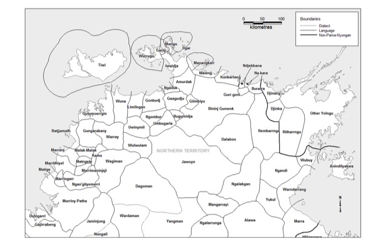

<!DOCTYPE HTML>
<!--
	Prologue by HTML5 UP
	html5up.net | @ajlkn
	Free for personal and commercial use under the CCA 3.0 license (html5up.net/license)
-->
<html>
	<head>
		<title>James Bednall</title>
		<meta charset="utf-8" />
		<meta name="viewport" content="width=device-width, initial-scale=1, user-scalable=no" />
		<link rel="stylesheet" href="assets/css/main.css" />
	</head>
	<body class="is-preload">

<!-- Header -->
			<div id="header">

				<div class="top">

					<!-- Logo -->
						<div id="logo">
							<span class="image avatar48"></span>
							<h1 id="title">James Bednall</h1>
							<p style="color: ivory;">Linguist</p>
						</div>

					<!-- Nav -->
						<nav id="nav">
							<ul>
								<li><a href="jamesbednall.com/index.html/#top" id="top-link"><span class="icon solid fa-home">Intro</span></a></li>
								<li><a href="#about" id="about-link"><span class="icon solid fa-user">About</span></a></li>
								<li><a href="/index.html/#research" id="about-link"><span class="icon solid fa-user">Research</span></a></li>
								<li><a href="/index.html/#languagecommunities" id="about-link"><span class="icon solid fa-user">Language communities</span></a></li>
								<li><a href="/index.html/#projects" id="about-link"><span class="icon solid fa-user">Projects</span></a></li>
								<li><a href="/index.html/#publications" id="about-link"><span class="icon solid fa-user">Publications</span></a></li>
								<li><a href="/index.html/#portfolio" id="portfolio-link"><span class="icon solid fa-th">Presentations</span></a></li>
								<li><a href="/index.html/#teaching" id="portfolio-link"><span class="icon solid fa-th">Teaching</span></a></li>
								<li><a href="/index.html/#cv" id="portfolio-link"><span class="icon solid fa-th">CV</span></a></li>
								<li><a href="/index.html/#contact" id="contact-link"><span class="icon solid fa-envelope">Contact</span></a></li>
							</ul>
						</nav>

				</div>

				<div class="bottom">

					<!-- Social Icons -->
						<ul class="icons">
							<li><a href="#" class="icon brands fa-twitter"><span class="label">Twitter</span></a></li>
							<li><a href="#" class="icon brands fa-facebook-f"><span class="label">Facebook</span></a></li>
							<li><a href="#" class="icon brands fa-github"><span class="label">Github</span></a></li>
							<li><a href="#" class="icon brands fa-dribbble"><span class="label">Dribbble</span></a></li>
							<li><a href="#" class="icon solid fa-envelope"><span class="label">Email</span></a></li>
						</ul>

				</div>

			</div>


			
<!-- Anindilyakwa -->
							<section id="about" class="three">
								<div class="container">
									<br>
									<header>
										<h2>Anindilyakwa</h2>
									</header>

									<p style="text-align: left;">Anindilyakwa is a Gunwinyguan language spoken in eastern Arnhem Land (Northern Territory), 
										on the Groote Eylandt archipelago (43 kms east of the Arnhem Land coast). It is a vibrant language, being one of the 
										few Australian languages still being acquired by children, and spoken by over 1,600 people (Marmion et al. 2014: 16).</p>
										<table>
											<tr>
											  <th style="align-content: center;"></a>
											  </th>
											</tr>
											<tr>
											  <td align="center">Anindilyakwa and surrounding languages (Harvey 2008)</td>
											</tr>

										</table>

									<p style="text-align: left;">Typologically, Anindilyakwa has been noted for its polysynthetic structure and morphological 
										complexity. It is a head-marking language, that demonstrates an intricate noun-classifying system, an obligatory system 
										for cross-referencing and agreement on nominals and verbs, demonstrates productive nominal incorporation, and employs 
										various argument-changing affixes within the verbal template (van Egmond 2012: 1; Bednall 2020: 6-7).</p>
										
									<p>Anindilyakwa has received a reasonable amount of documentation and description. Below is a list of key linguistic 
										research that has been undertaken over the last century:</p>

										<ul>
											<li>Tindale, Norman. 1925-1926. Natives of Groote Eylandt and of the west coast of the Gulf of Carpentaria. 
												Parts 1-2. <i>Records of the South Australian Museum</i>, 3, 61–143.</li>
											<li>Capell, Arthur. 1942. Languages of Arnhem Land, North Australia. Oceania, 12, 4, 364–392. JSTOR 40327959.</li>
											<li>Moody, Mary L.A. 1954. <i>A descriptive statement of the phonemics and morphology of Anindilyaugwa, the language 
												of Groote Eylandt, Northern Territory</i>. MA thesis, University of Sydney.</li>
											<li>Worsley, Peter M. 1954. <i>The changing social structure of the Warnindiljaugwa</i>. PhD thesis, Australian National 
												University, Canberra. <a href="http://hdl.handle.net/1885/116807" target="_blank">http://hdl.handle.net/1885/116807</a></li>
											<li>Heath, Jeffrey. n.d. <i>Draft Grammatical Sketch of Anindhilyagwa (Groote Eylandt, Australia)</i>. Canberra: AIATSIS.</li>
											<li>Stokes, Judith. 1981. Anindilyakwa phonology from phoneme to syllable. In Barbara Waters (ed.) <i>Work Papers of SIL-AAB Series 
												A volume 5. Australian Phonologies: Collected Papers</i> (pp. 139–81). Darwin: SIL. <a href="www.ausil.org.au/sites/ausil/files/WP-A-5%20Abubduktajwa%20Phonology_0.pdf" target="_blank">www.ausil.org.au/sites/ausil/files/WP-A-5%20Abubduktajwa%20Phonology_0.pdf</a></li>
											<li>Stokes, Judith. 1982. A Description of the Mathematical Concepts of Groote Eylandt Aborigines. In Susan Hargrave 
												(ed.) <i>Work Papers of SIL-AAB Series B volume 8. Language and Culture</i> (pp. 33–152). Darwin: SIL. 
											<a href="http://www.ausil.org.au/sites/ausil/files/WP-B-8%20Groote%20Maths%20concepts_0.pdf" target="_blank">www.ausil.org.au/sites/ausil/files/WP-B-8%20Groote%20Maths%20concepts_0.pdf</a></li>
											<li>Waddy, Julie Anne. 1984. <i>Classification of plants and animals from a Groote Eylandt Aboriginal point of view</i>. PhD thesis, 
												Macquarie University.</li>
											<li>Waddy, Julie. 1988. <i>Classification of Plants & Animals from a Groote Eylandt Aboriginal Point of View</i>. Darwin: 
												Australian National University North Australia Research Unit. <a href="http://hdl.handle.net/1885/49320" 
												target="_blank">http://hdl.handle.net/1885/49320</a></li>
											<li>Leeding, Velma. 1989. <i>Anindilyakwa Phonology and Morphology</i>. PhD thesis, University of Sydney. 
												<a href="https://ses.library.usyd.edu.au/handle/2123/1558" target="_blank">https://ses.library.usyd.edu.au/handle/2123/1558</a></li>
											<li>Leeding, Velma. 1996. Body Parts and Possession in Anindilyakwa. In Hilary Chappell & William McGregor (eds.) 
												<i>The Grammar of Inalienability. A Typological Perspective on Body Part Terms and the Part-Whole Relation</i> (pp. 193–250). 
												De Gruyter.</li>
											<li>van Egmond, Marie-Elaine. 2012. <i>Enindhilyakwa phonology, morphosyntax and genetic position</i>. PhD thesis, University of Sydney. 
												<a href="https://ses.library.usyd.edu.au/handle/2123/8747" target="_blank">https://ses.library.usyd.edu.au/handle/2123/8747</a></li>
											<li>Rademaker, Laura. 2014. <i>Language and the mission: Talking and translating on Groote Eylandt 1943-1973</i>. PhD thesis, 
												Australian National University. http://hdl.handle.net/1885/109309</li>	
											<li>Rademaker, Laura. 2018. <i>Found in Translation: Many Meanings on a North Australian Mission.</i> Hawaii: University of 
												Hawaii Press.</li>		
											<li>Bednall, James. 2020. <i>Temporal, aspectual and modal expression in Anindilyakwa, the language of the Groote Eylandt archipelago, 
												Australia</i>. PhD thesis, Australian National University & Université de Paris. 
												<a href="http://hdl.handle/net/1885/167214" target="_blank">http://hdl.handle/net/1885/167214</a></li>		
											<li>Bednall, James. ACCEPTED. Feeling through your chest: Body-based tropes for emotion in Anindilyakwa. 
												<i>Pragmatics and Cognition.</i></li>		
											<li>Bednall, James. IN PRESS. ‘Yirriyengburnama-langwa mamawura-langwa: Talking about time in Anindilyakwa’ in A McGrath, J. 
												Troy & L. Rademaker (eds.) <i>Everywhen: Conceiving, Knowing, and Narrating the Past of Indigenous Australia</i>. Lincoln: 
												University of Nebraska Press.</li>		
										</ul>

										<h3>Archived language collections are available at:</h3>
										<ul>
											<li>Bednall, James (collector) <i>Anindilyakwa language documentation.</i> [JRB1]. Digital collection managed by 
												PARADISEC. [OpenAccess] <a href="http://catalog.paradisec.org.au/collections/JRB1" target="_blank">http://catalog.paradisec.org.au/collections/JRB1</a></li>
											<li>Stokes, Judith & Julie Waddy (collectors) Digital collection managed by AIATSIS. <a href="https://aiatsis.gov.au/collections/searchcollection" target="_blank">https://aiatsis.gov.au/collections/searchcollection</a></li>
											<li>van Egmond, Marie-Elaine (collector) Digital collection managed by Endangered Languages Archive (ELAR). 
												<a href="http://elar.soas.ac.uk/deposit/0144" target="_blank">http://elar.soas.ac.uk/deposit/0144</a></li>
										</ul>

										<h3>Audio and video language resources are available at:</h3>
										<ul>
											<li>Groote Eylandt Language Centre <a href="https://www.youtube.com/channel/UCXCRwqVs3UTLPvR9q7TVKeA" target="_blank">YouTube channel</a></li>
											<li><a href="https://anindilyakwa.org.au/resources/dictionaries/ela/" target="_blank">Ekirra-langwa web dictionary</a></li>
											<li><a href="https://anindilyakwa.org.au/resources/dictionaries/alnf" target="_blank">ALNF web dictionary</a></li>
										</ul>

										<h3>Useful community-focused language resources are available from the Groote Eylandt Language Centre:</h3>
										<ul>
											<li>Groote Eylandt Linguistics. 1993. <i>Eningerribirra-langwa jurra [=Book about all sorts of things]</i>. Angurugu, Australia.</li>
											<li>Lalara, Rhoda and Alfred Lalara. 2014. <i>When we go walkabout: Yirruwa Yirrilikenuma-langwa</i>. Sydney: Allen & Unwin.</li>
											<li>Clan songs, church songs, band music and educational CDs</li>
										</ul>
		
										<h3>Other useful websites relating to Anindilyakwa language include:</h3>
										<ul>
											<li><a href="http://www.anindilyakwa.org.au/" target="_blank">Groote Eylandt Language Centre</a></li>
											<li><a href="http://www.anindilyakwa.com/" target="_blank">Anindilyakwa Land Council</a></li>
											<li><a href="http://www.anindilyakwasafe.net/" target="_blank">Anindilyakwa Safe</a></li>
											<li><a href="http://www.laal.cdu.edu.au/browse/language/450787" target="_blank">Living Archive of Aboriginal Languages (LAAL)</a></li>
											<li><a href="https://glottolog.org/resource/languoid/id/anin1240" target="_blank">Glottolog</a></li>
											<li><a href="https://wals.info/languoid/lect/wals_code_ann" target="_blank">World Atlas of Language Structures (WALS)</a></li>
											<li><a href="https://ebible.org/pdf/aoi/aoi_a4.pdf" target="_blank">Electronic copy of the Anindilyakwa Bible</a></li>
											<li><a href="https://apps.apple.com/gh/app/audiobible-anindilyakwa-edition/id986747048" target="_blank">Anindilyakwa AudioBible</a></li>
											<li><a href="https://www.ntgpe.org/commdoc/web/index.htm" target="_blank">CommDoc Community Consultation Language App</a></li>
										</ul>

								</div>
							</section>
<!-- Footer -->
			<div id="footer">

				<!-- Copyright -->
					<ul class="copyright">
						<li style="font-size: x-small;">&copy; James Bednall. All rights reserved.</li><li>Design: <a href="http://html5up.net">HTML5 UP</a></li>
					</ul>

			</div>

<!-- Scripts -->
			<script src="assets/js/jquery.min.js"></script>
			<script src="assets/js/jquery.scrolly.min.js"></script>
			<script src="assets/js/jquery.scrollex.min.js"></script>
			<script src="assets/js/browser.min.js"></script>
			<script src="assets/js/breakpoints.min.js"></script>
			<script src="assets/js/util.js"></script>
			<script src="assets/js/main.js"></script>

	</body>
</html>